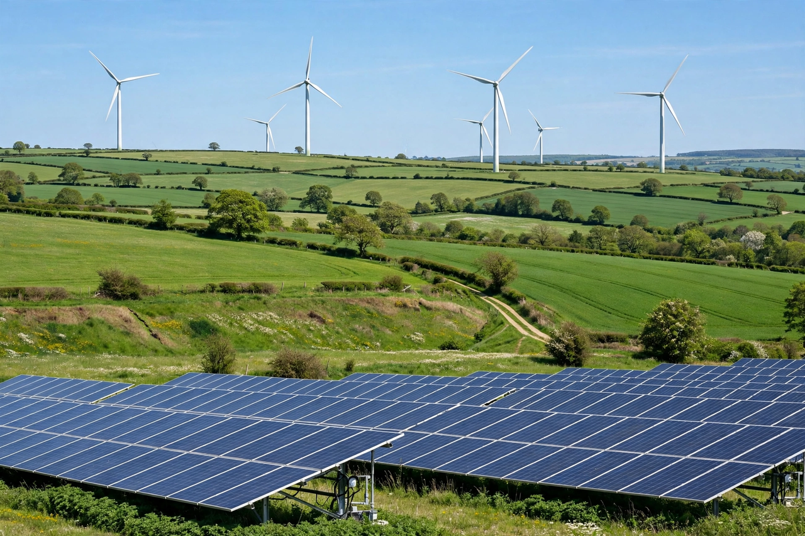

Carbon neutrality
From Wikipedia, the free encyclopedia
| Carbon neutrality | |
|---|---|
 | |
| Definition | Balance between carbon emitted and carbon removed from the atmosphere |
| Key framework | Paris Agreement (2015); IPCC net-zero scenarios |
| Common target year | 2050 for many countries and companies |
Carbon neutrality is a state of balance between carbon dioxide emissions produced and carbon dioxide removed from the atmosphere. It can be achieved by radically reducing emissions and offsetting residual emissions through carbon sinks — forests, soils and oceans that absorb more carbon than they release — and through technologies such as carbon capture and storage. Where neutrality covers all greenhouse gases, not just CO₂, the equivalent concept is net zero emissions.
Terminology and standards
Standards such as PAS 2060 and ISO 14068, and the Science Based Targets initiative's Net-Zero Standard, define how organisations quantify, reduce and offset emissions across scopes 1 (direct), 2 (purchased energy) and 3 (value chain). Critics warn that heavy reliance on offsets — especially low-quality credits — can delay genuine reductions, a practice associated with greenwashing.
National and corporate pledges
Under the Paris Agreement, limiting warming to 1.5 °C requires global net-zero CO₂ emissions around mid-century. The European Union, United Kingdom, Japan and others have legislated 2050 targets; China has pledged carbon neutrality before 2060 and India by 2070. Bhutan and Suriname are already carbon negative, absorbing more CO₂ through their forests than they emit. Costa Rica is frequently cited for its reforestation and renewable electricity record.
Methods
Decarbonisation pathways emphasise energy efficiency, electrification powered by renewables (solar, wind, hydro, geothermal, nuclear), low-carbon fuels such as green hydrogen, methane abatement, reforestation and ecosystem restoration, and carbon dioxide removal. At the individual level, carbon footprints can be offset through verified projects, though systemic changes in energy and transport dominate reduction potential. See also climate change policy and large-scale state campaigns for contrasts in implementation.